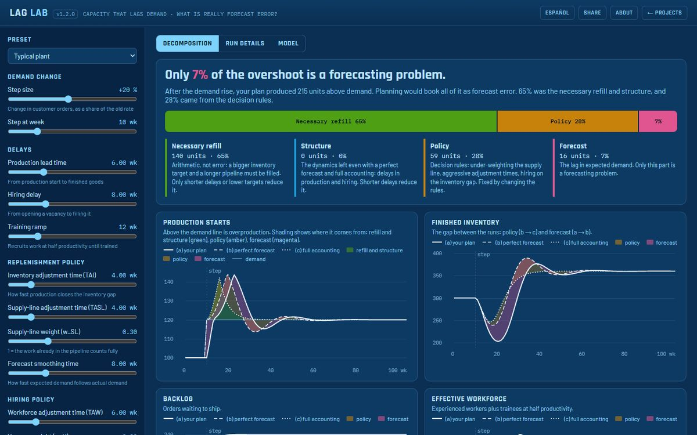

Field notes
How this thinking has been applied.
Each note below links to a published paper, article or live model — not a named client engagement. No confidential data, client-owned figures, or current-employer material appears anywhere on this page.
Attack-defence loop in a cyber-physical ship ballast system
Independent research · Live model
- Context
- A five-stock system dynamics model of how a cyberattack on a ship's ballast control system actually unfolds — attacker foothold, the defender's delayed perception of it, mobilised response capacity, physical ballast deviation, and containment effectiveness that improves with experience.
- Problem
- Static threat enumeration (a checklist of vulnerabilities, scored once) can't show whether a given detection delay is fast enough to prevent a physical stability loss — that's a dynamic question about a race between propagation and response, not a static score.
- Approach
- A closed-loop model — attacker propagation reinforcing itself, response capacity and containment effectiveness balancing it back — reveals a "Dynamic Inadequacy Threshold": a frontier in detection-delay/attack-speed space beyond which containment simply arrives too late.
- Try it
- The interactive version below runs the same equations as the paper's companion code, live, in your browser. Drag the detection-delay slider and watch the ballast deviation cross — or stay under — the stability-loss threshold.
Bed-and-workforce amplification in a hospital replenishment system
Healthcare · Published article
- Context
- A hospital bed logistics system: a stock of beds depleted as operations orders them and refilled as cleaned beds return, with a linked workforce stock — sized to the same desired-throughput signal, but replenished only as fast as hiring and onboarding allow.
- Problem
- A 10% increase in bed order rate looks, on paper, like a 10% operational adjustment. It isn't. Two coupled stock-and-flow structures with different replenishment delays don't scale linearly — they overshoot.
- Approach
- A system dynamics model built entirely in spreadsheets — deliberately, to keep the stock/flow/auxiliary structure transparent and reproducible rather than hidden inside specialized software.
- Result
- A 10% step increase in order rate produced a transitory 22% overshoot in bed stock (peaking near 4,894 units against a 4,400 target) and a 68% spike in the hiring rate — before both settled back to the 10% long-run change. The overshoot is a structural signature of the coupled delays, not a planning error.
How much of a post-step overshoot is really forecast error?
Independent research · Live model
- Context
- A plant whose capacity follows its workforce: a six-week production lead time, eight weeks to fill a vacancy, and twelve weeks before a recruit is fully productive. Customer demand steps up by 20%.
- Problem
- Production, inventory and hiring overshoot, and planning books the whole overshoot as forecast error. The usual remedy, a better forecast, is then aimed at what may be the smallest part of the problem.
- Approach
- A production and workforce model in the style of Sterman's Business Dynamics runs the same step three ways: the plan as it is, the same plan with a perfect forecast, and a perfect forecast with the supply line and vacancies fully accounted for and hiring on the capacity gap. The differences split the overproduction into four parts that add up exactly: the necessary refill, structure, policy and forecast.
- Result
- Of 215 units produced above demand, 140 (65%) were the necessary refill of a bigger inventory and a longer pipeline: arithmetic, not error. 59 (28%) came from the decision rules, and 16 (7%) from the forecast. Fixing the rules removes almost four times more overshoot than a perfect forecast would.
Each note above links to its paper, article or live model, so you can check it yourself. If you want to sanity-check this approach against your own situation, that's what the first conversation is for.
Recognize the pattern